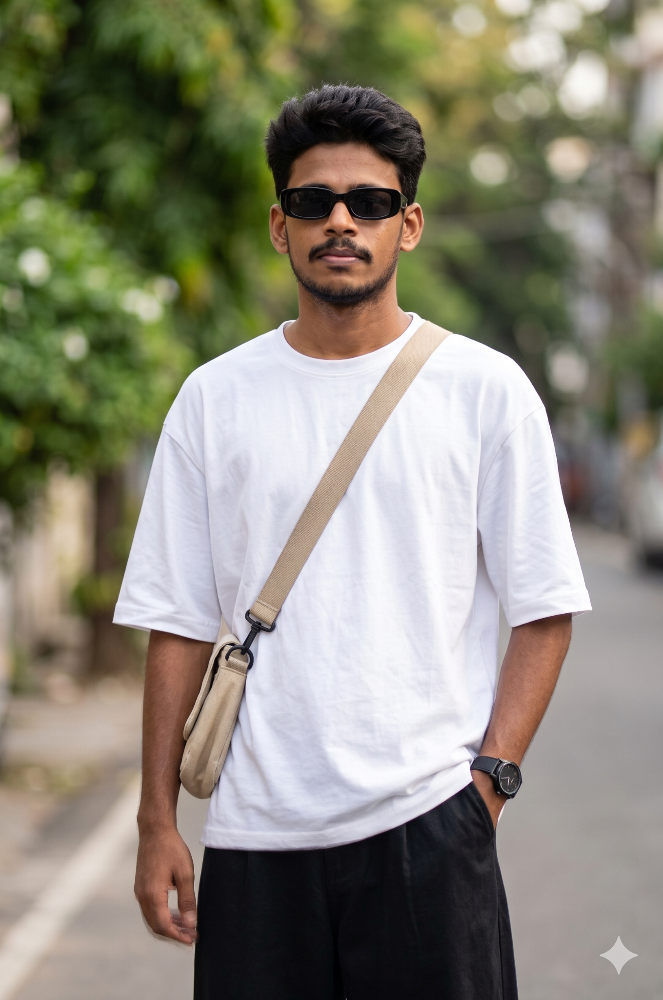

SHORT NARRATIVE EDIT
Everyday, in motion
A brief story built from rooftop, interior and movement shots, connected through purposeful cuts.
WELCOME TO MY WORLD

FRAME BY FRAME.
STORY BY STORY.
CINEMATIC EDITS
REELS & STORIES
Good footage.
A better story.
Cinematic sequences, creator reels
and before/after edits.
SHORT NARRATIVE EDIT
A brief story built from rooftop, interior and movement shots, connected through purposeful cuts.
CINEMATIC EDIT
A rooftop sequence combining a layered scene, on-screen titles and a moody visual finish.
DENTAL EDUCATIONAL REEL
Talking-head footage with Tamil/English captions, supporting visuals and highlighted key points.
DENTAL EDUCATIONAL REEL
An educational edit that brings together the speaker, product visuals, text and illustrative inserts.
PARENTING & CONFIDENCE
A parenting reel with numbered points, Tamil captions and illustrative cutaways. Watch either export of this edit.
PARENTING REEL
A talking-head edit using split-screen inserts, highlighted captions and visual examples to support the speaker.
EDUCATIONAL REEL
A list-based reel combining a presenter, channel screenshots, numbered recommendations and animated text.
BUSINESS EXPLAINER
A business explainer that pairs the presenter with product and cultivation footage in a split-screen layout.
EDITING COMPARISON
Raw and edited footage together: see how captions, supporting cooking visuals and cutaways build the finished reel.
EDITING COMPARISON
A longer before/after demonstration showing the original delivery alongside the finished edit and its visual inserts.
EDITING COMPARISON
A creator-led reel shown before and after editing, with captions, illustrative cutaways and drink visuals.
MY ROLE: VIDEO EDITING Videos retain their existing audio, captions and before/after layouts.
EDITOR. STORYTELLER. ALWAYS LEARNING.
I'm Mohammed Siddik, a video editor working with creators and businesses. I turn footage into cinematic sequences, social videos and educational reels.
My focus is simple: make the story clear, give every cut a reason, and keep the viewer with it. I work with Premiere Pro and CapCut, with experience editing content for Thozhilmunaivordotcom and freelance clients.
From the first assembly
to the final export.
About 2 years of use
About 5 years of use
Select the moments. Build the sequence. Get the pacing right.
Captions, supporting visuals and text that help the message land.
Color adjustments, audio balance and an export for the right screen.